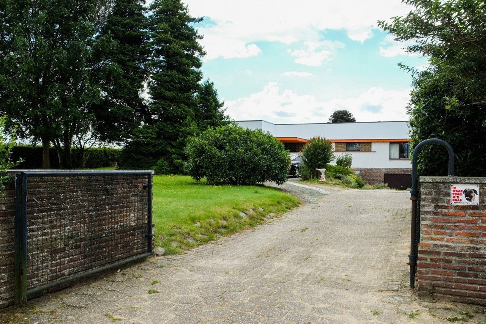
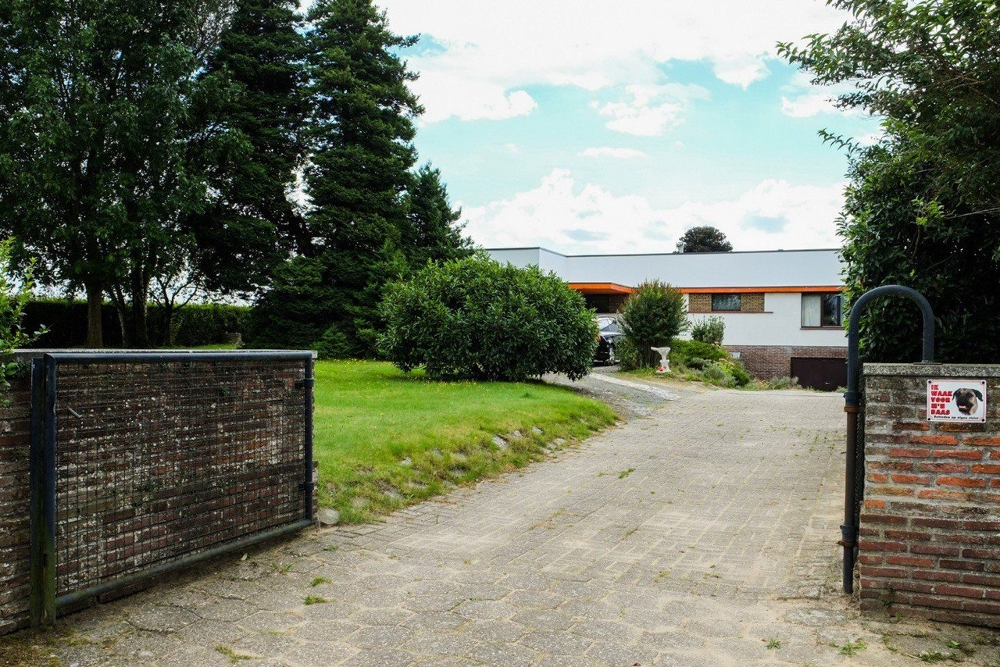
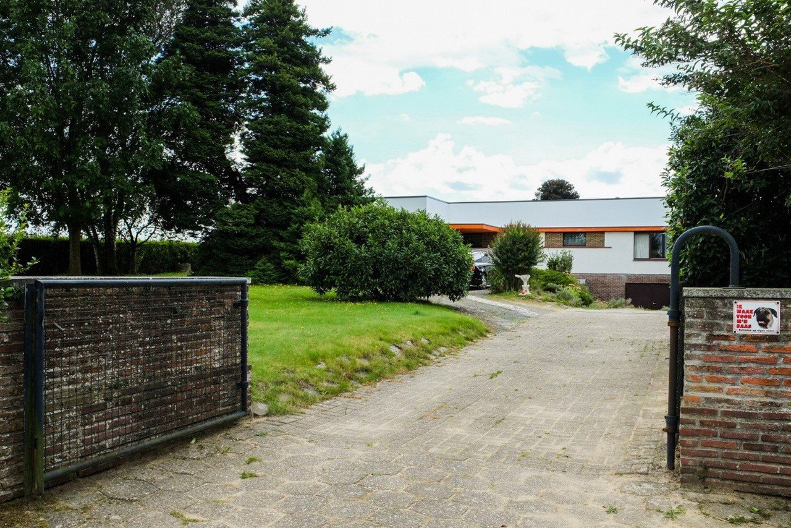

x - x - x

Meter van Vava
De ouders van Moetje heb ik niet echt gekend, Meter van Vava wel. Aangezien Vava enig kind was, waren wij haar enige kleinkinderen.
Regelmatig kwam ze tijdens de grote vakantie bij ons logeren en in een bepaald jaar ging ze zelfs mee kamperen in de Ardennen (in Frahan?). Toen was kamperen nog echt: alleen koken op kampvuur, zelf tafels en stoelen sjorren, toilet in de natuur enz..… Vava en de jongens waren gaan wandelen en Meter, die nogal preuts was, had zich even in de natuur teruggetrokken om een behoefte te doen. Vava en de jongens zagen haar in de vallei zitten en Vava riep heel luid;” Meter, ik zie je bloot gat!” Meter was helemaal niet gecharmeerd.
In onze tenten sliepen we op zakken gevuld met stro en Vava dirigeerde de kampeerplaats als een legerofficier. Ieder morgen moesten we alle strootjes die op het terrein lagen oprapen en wee degene die niet voldeed.
Om een voor mij onbekende reden had Meter vanVava bepaalde voorkeuren onder die kleinkinderen. Sommige trok ze voor en andere keek ze weinig naar om.
Dirk zat in de tweede categorie. Hij deed niets liever dan Meter te pesten. Hij wist dat ze als de dood was voor muizen en had er niets beter op gevonden dan in de kast van haar slaapkamer een paar kleine kuikentjes te verstoppen. s’Nachts stond het huis op stelten van het geroep van Meter.
Moetje en Vava
Toen we in Merelbeke kwamen wonen gingen we naar de lagere school op ongeveer één kilometer van huis. Toen kon men nog niet blijven lunchen op de school en deden we het traject vier keren per dag. Anne (10-11 jaar) nam Marijke bij de hand want zij had het meest autoriteit om haar in bedwang te houden, ik (9-10 jaar) zorgde voor Karel die een braaf ventje was. Ik herinner me nog goed hoe we in de lente omringd door de velden vol bloemen stapten.
In de wintermaanden kwamen we tegen donker thuis, kregen een vieruurtje en gingen dan gezellig samen rond de stoof zitten. Moetje kon prachtig vertellen. In “La Libre Belgique” volgde ze haar “feuilleton” en iedere namiddag vertelde ze ons het vervolg van een heel spannend verhaal over erfenissen en kasteelmoorden..” Het waren momenten om niet meer te vergeten en ik ken nog steeds passages van dat verhaal.
Vava was ook heel vlot ter tale en las s’avonds soms voor uit “Van Pool tot Pool”.
Hij hield van discipline en verdroeg geen tegenspraak. Marijke had een bepaalde manier om met haar charmes toch telkens te ontsnappen aan zijn toorn.
Als we iets niet mochten weten spraken Moetje en Vava onder elkaar Frans. Geleidelijk aan beseften ze dat we hen begrepen en werd deze strategie enkel gebruikt voor de drie laatste. Dan klonk het “Attention pour les petits!”.
Maaltijden waren bij de Liefooghe’s altijd geanimeerde gelegenheden. Eerst en vooral at je wat de pot kookte. Gelukkig vonden degenen die iets niet lusten al vlug een uitweg. Vava werd even afgeleid en de borden werden in het geniep verwisseld.
Een serieuse “tucht”straf was zonder eten naar bed. Dit lukte tot Vava besefte dat we achter zijn rug naar de gestrafte eten smokkelden.
Ook herinner ik me dat er tijdens die maaltijden sterk gediscuteerd werd over kunst, cultuur, filosofie … Heel interessante gesprekken waarvan ik me nog flarden herinner.
Sint Niklaas en Pasen waren voor ons belangrijke feestdagen. Dan kregen we uitzonderlijk speelgoed en snoep.
Ik herinner me dat we in Sint-Denijs Westrem piepkeduik speelden in huis en in de “mooie” plaats onder de canapé kropen en daar een hoop verborgen speelgoed vonden. Hoe onze ouders dat uitlegden weet ik niet meer.
Vooral Vava hield er van om die dagen spannend te maken. Het speelgoed werd zo uitgestald dat het bijna als een winkel leek. Vava stond eerst op en riep dan luid “de Sint heeft ons vergeten” wat het signaal was om uit ons bed te komen.
Met Pasen schilderden Vava en Moetje de eitjes en later hielpen we hen daarbij om de kleintjes te verassen. Chocolade eitjes herinner ik me niet. Die eitjes in de grote tuin zoeken was natuurlijk heel leuk maar nu en dan vonden we er toch maanden later nog wat.
Op weg naar het dorp Merelbeke kwamen we voorbij een tehuis voor oude mannen en oude vrouwtjes. Toen werden oudjes strict gescheiden volgens hun gender. Het was een instelling van nonnetjes en die hielden het zekere voor het onzekere….je weet maar nooit.
Hoe weet ik niet meer, maar Marijke had daar al vlug een vriendschap aangeknoopt met een oud vrouwtje. Ze ging er regelmatig op bezoek en dat werd heel erg gewaardeerd door dat vrouwtje. Ook daar toonde Marijke haar bekommernis en medeleven en haar groot hart waarvoor ze zeker gekend is.
Ik was vergeten dat oma ludovica zo'n sexy opflakkeringen had dat ze haar kont liet zien.
De eerste reizen naar Frahan gebeurde in de tijd dat het nog (veel) regende tijdens de zomer.
Op de olijfgroene volkswagen,de brilkever ( dubbel achterraampjes) uit 1948,werd een
"porte bagage"gehecht.Hierop werd de door moetje vervaardigde witte zeilen tent gebonden
en een legertent die vava bij zijn vriend Roothoofd uit St niklaas,in bruikleen kreeg.We kregen
gelukkig ook een "zeil" mee die de amerikanen na de oorlog hier hadden laten rondslingeren,
en met de label"made in USA"de garantie gaf dat het "niet doorrregende".
Achter leuning van de achterste zitplaats in de volkswagen was er het"Bakje".Dit was een
bagage ruimte waar de drie kleinste kinderen zaten en op de zetel zat de rest.
De eerste en tweede reis was naar Frahan,waar we op een weide nabij de Semois ons
kamp hadden opgeslaan.De"Piketten"van 50cm lang in de grond hechten was een job waarbij
geroddeld en gevloekt werd.Op opgeblazen"Chambre-a-aires",binnen-autobanden konden we
op de semois rondzwemmen en varen.We slaagden en zelfs in om het vlot van Roninson Crusoë
na te bootsen.We leefden ook van"Jacht en visvangst".De semois zat vol vis die we in de
pan baktten in de Solo boter.Dit luktte als we met veel pompen het alcohol kamp vuurtje
"aan"kregen.
Zoals thuis werd aan de zelfgemaakte dis ook"gelezen"of gebeden voor het eten."Heer,zegen deze
spijzen ..."prevelden we met gevouwde handjes.Het gebed liep uit in een snel gemompel,naargelang
onze buik groldde.
Het tweede jaar in Frahan hadden we tussen regen,wind en af en toe een opklaring,een
brugje over de semois gemaakt.Op die plaats is er nu nog steeds een voegangers brugje.
Met de nieuwe volkswagen De Luxe décapotable of schuifdak gingen we op reis naar
Engreux.Daar waar je op verkenning geweest bent.In Engreux kampeerden we boven op
de heuvel van waaruit we de bosweg afdaaldden naar de Ourthe.Deze reis werd als
een wandelreis beschouwd.De"uitkijktoren"van waaruit een mooi panorama op de zeven
Ourthes de topper was,lag steeds op het wandelpad.
Op de nieuwstee volkswagen De Luxe met schuifdak was het aanbrengen van de plaat met
nummer 4C896 een plechtige gebeurtenis.Met deze wagen gingen we op vakantie naar
Ouren aan de rivier de Our.Deze mooie plaats is gelegen op het punt waar Luxemburg,
Nederland en België samenkomen.Het meerijden met de auto was voor de "meisjes"
en Kareltje voorzien.Wij de jongens gingen met,"OTOSTOP"(autostop of nu"liften" genoemd).
In Ouren bouwdden we reeds een kamp met een proffesionele nederzetting.